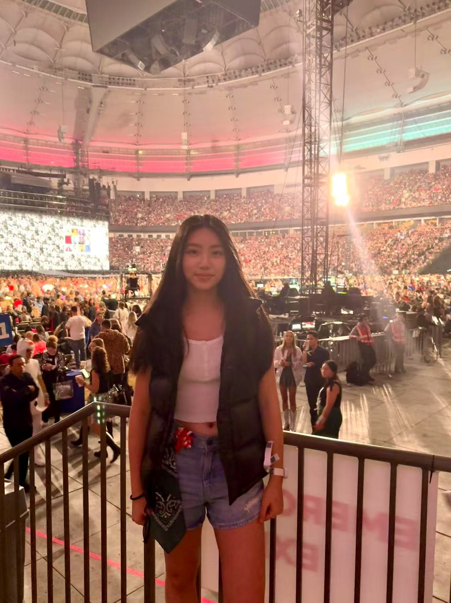

Meet Our Team
Get to know the passionate students behind OneKey and learn how to connect with us
Our Team

Alex Zhang
Vanstrings ManagerCurrently a senior at Fraser Heights Secondary School, I'm honored to serve as the General Manager of Vanstring and as the Principal Second Violinist. Outside of music, I enjoy playing volleyball and basketball, spending time in nature, and reading a wide range of literature. With a strong interest in the sciences, I aspire to study biomedicine with the goal of pursuing a career in medicine.

Curtis Wei
Vanstrings ManagerI'm Curtis, a grade 10 student at Collingwood Secondary School. I'm grateful to be serving as one of the founders of Onekey as well as the General Manager of Vanstring. I have a natural passion for sciences and I waste much of my time preparing for the international chemistry and coding competitions. In my spare time, I play the piano and conduct research on group theory and quantum computing.

Eliza Sun
Ex-Communications TeamI'm one of the co-founders and co-managers at Onekey. I'm currently attending university in Philadelphia at Haverford University. One fun fact about me is that I have an extensive collection of stuffed animals, most of which are… jellycat pigs. When I'm not performing at senior homes, I enjoy spending my free time participating in robotics and making pottery.
Grace Xu
Ex-Communications TeamGrace is a passionate musician and one of the co-founders of OneKey. With an ARCT-level piano background and a love for community, Grace helped create OneKey to connect music students and let others see the joy of sharing music and knowledge. She finds fulfillment in sharing joy through student-led concerts and tutoring to create a meaningful impact. Grace is dedicated to fostering supportive, inspiring spaces where young musicians can grow and support one another.

Jiawei Wang
Ex-ManagerI'm an undergraduate student at Pomona College studying International Relations. I've greatly enjoyed working with the Onekey team and sharing my love for music with seniors and young performers. I still enjoy playing the piano and listening to classical music in my spare time.

Ethan Xie
Technology CoordinatorHi there! I'm a student entering grade 10, and I'm passionate about music, technology, and engineering. I enjoy creating projects such as building drones. At OneKey, I've volunteered through music, and this year, I've been one of the main developers of this site. I look forward to working with OneKey in the future!

Gabrielle Liu
Communications TeamGabrielle is a grade 11 student at Lord Byng Secondary School, where she is part of the Byng Arts mini school program for music. Her musical journey began when she was five, and since then, she has competed in, and won numerous music competitions. In addition to performing, Gabrielle shares her passion by teaching violin and piano to students of all ages. She has a strong passion for the arts, especially singing and painting. Alongside her artistic interests, Gabrielle is passionate about science and aspires to pursue a career in dermatology.

Jessica Yu
Communications TeamHi, I'm Jessica! I'm super passionate about music and spreading joy through music. As part of the communications team, I help young musicians gain more experience through performances in senior homes. In my spare time, I love to crochet and listen to music!

Shane Zhang
Homework Help CoordinatorI'm a student entering Grade 10 who is passionate about science, outdoor activities, and history. I also have ample volunteering and tutoring experience. For two years, I've tutored Math and English to younger students both with and outside of Onekey. This year, I took on the role of helping coordinate homework help at Onekey.

Selena Yu
Homework Help CoordinatorSelena is a Grade 9 student at Crofton House school. She is a part of the executive of Vankey Onekey and serves as the concertmaster of Vanstring, as well as playing as a first violinist of her school's orchestra. Selena loves playing badminton and skiing in the winter.
Get In Touch
Ready to join our mission or have questions? We'd love to hear from you!